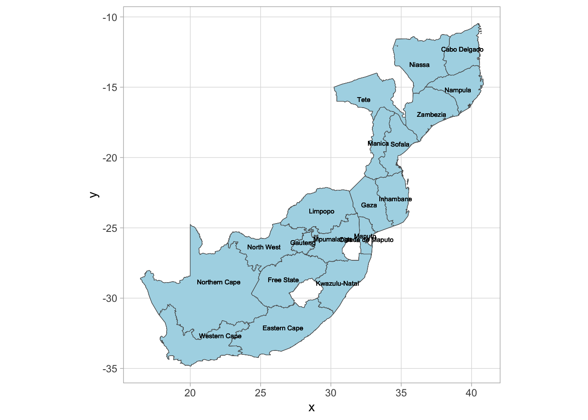

label variable country "Full-length country name"
label variable GID_0 "3-digits ISO-Code"
label variable region "Primary region name"
label variable GID_1 "GADM-identifier for level-1 administrative unit, or customly created identifier"
label variable year "Calendar year"
label variable grp_lcu "Gross regional product in local currency and current prices"
label variable pop "Regional population estimate"
label variable grp_pc_lcu "Gross regional product per capita in local currency and current prices"
label variable grp_pc_usd "Gross regional product per capita in US dollar and current prices"
label variable grp_pc_lcu_2015 "Gross regional product per capita in local currency and 2015 prices"
label variable grp_pc_usd_2015 "Gross regional product per capita in US dollar and US 2015 prices"
label variable grp_pc_lcu2015_usd "Gross regional product per capita in local 2015 prices and converted to US dollar using the 2015 exchange rate"
label variable cpi_2015 "Worldbank Consumer Price Index with base year 2015"
label variable deflator_2015 "Worldbank national GDP deflator with base year 2015"
label variable fx "FRED market exchange rate (local currency to one USD)"
label variable PPP "Purchasing Power Parity exchange rate (local currency to one international dollar)"
label variable StructChange "Categorical variable indicating the start of a new data source, changes in administrative boundaries, and when regional time series were extended to a previous version of DOSE"
label variable T_a "Area-weighted annual mean temperature"
label variable P_a "Area-weighted annual total precipitation"Additional data: DOSE
The data that you should use in your project is an amazing compilation of sub-national economic data all the way from 1900 to 2015. It covers all of Europe.
In your project, you may want to add some colour to your story by comparing the economic development of your country to other countries outside of the dataset, be it in the Americas or Asia.
The DOSE – Global data set of reported sub-national economic output dataset is a great resource for this. It contains data on regional economic development for 83 countries in the world, at varying times from 1960 to today.
I have formatted it into Stata format and saved a shapefile that you can use to create maps to supplement your analysis, if you wish.
You can download the Stata data file here
You can download the coordinates file here
You can download a dofile to create maps here
Variables
There are several variables in the dataset. Here are the labels for each of them, as you can use in Stata.
Data coverage
Not every country has data for every year. Here is a plot showing the data coverage for a selection of half of the countries in the dataset.
Example: GDP per capita
We might want to plot the evolution of gross regional product per capita in South African and Mozambique to contrast with Sweden and Finland.
We want to know what the names of the regions are first:
Reading layer `dose_v2_map_file' from data source
`/Users/jonathanjayes/Documents/PhD/EOSE09-site/data/dose_v2_map_file.shp'
using driver `ESRI Shapefile'
Simple feature collection with 1602 features and 11 fields
Geometry type: MULTIPOLYGON
Dimension: XY
Bounding box: xmin: -179.9984 ymin: -55.9797 xmax: 179.9979 ymax: 83.11042
Geodetic CRS: WGS 84
Next we can create a facet plot and fill the polygons with the GRP per capita in 2000, 2004, 2008, 2012, and 2016.